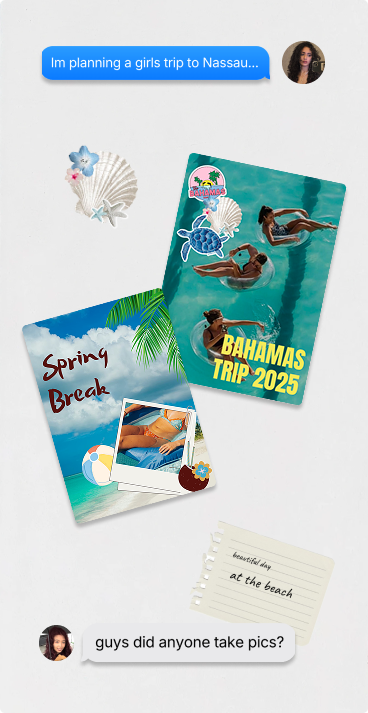
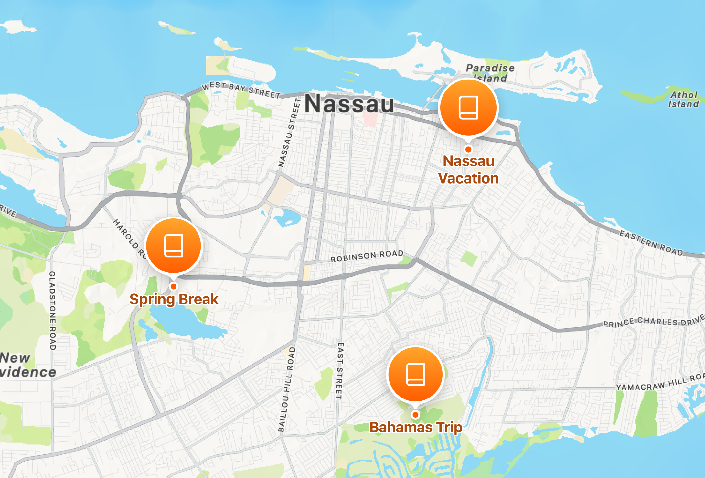

Integrating creation into navigation,
to anchor memories to human journeys.
[ SPARKJAM 2026 ]
With a brief to design a creation-tool for a non-creative-centric product, our team designed Apple Maps ScrapBooks, a feature that allows users to create digital scrapbooks of their journeys.
** No actual relation to the Apple, this was for a Design-a-thon **

